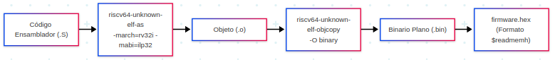

Guía de Simulación y Generación de Firmware
Esta sección explica cómo compilar el software (firmware) en ensamblador RISC-V y cómo ejecutar la simulación del SoC para Tiny Tapeout utilizando Icarus Verilog y GTKWave.

1. Generación del Firmware
El repositorio cuenta con un Makefile dentro de femtoRV/firmware/asm/ que automatiza todo el flujo de ensamblado, enlace y generación de las imágenes hexadecimales para la memoria Flash.
Paso 1: Seleccionar el Programa a Compilar
En el archivo femtoRV/firmware/asm/Makefile, la variable OBJECTS define qué archivos objeto se compilarán y enlazarán en el binario final:
# Ejemplo: seleccionar el programa de prueba deseado
OBJECTS = test_ram_load.o
# OBJECTS = blink.o
# OBJECTS = uart_full_demo.o putchar.o
Paso 2: Ejecutar el Comando de Compilación
Desde el directorio de firmware, ejecute:
Ver detalles de la ejecución interna
Este comando ejecuta de forma automatizada los siguientes procesos internos:
- Ensamblado: Compila los archivos fuente en ensamblador (
.S) a objetos (.o) medianteriscv32-unknown-elf-ascon las banderas-march=rv32i -mabi=ilp32. - Enlace: Enlaza los objetos con el script de linker
bram.ldusandoriscv32-unknown-elf-ldpara generar el ejecutablefirmware.elf. - Extracción de Formatos: Utiliza
riscv32-unknown-elf-objcopypara generar: firmware.bin: Binario plano del programa.firmware_flash.hex: Archivo en formato hexadecimal Verilog cargado por el modelo de simulación de la Flash SPI.- Compensación de Corrimiento (Silicio Físico): Ejecuta el script
fix_shift.pypara generarfirmware_shifted.hex, compensando el desplazamiento de 1 bit del silicio original. - Copia de Archivos: Transfiere automáticamente las imágenes hexadecimales generadas a las carpetas destino para la simulación.
2. Simulación del SoC Tiny Tapeout
La simulación se ejecuta desde la carpeta tinytapeout/.
Paso 1: Ejecutar la Simulación con Make
Navegue a la carpeta tinytapeout/ y ejecute:
Ver detalles de la ejecución interna
El comando realiza los siguientes pasos de manera automática:
- Limpieza: Elimina simulaciones previas (
rm -f a.out *.vcd). - Compilación (Icarus Verilog): Ensambla el banco de pruebas y los módulos RTL ejecutando internamente:
iverilog -DBENCH -DSIM -DPASSTHROUGH_PLL -DBOARD_FREQ=27 -DCPU_FREQ=27 tt_um_femto_TB.v ${OBJS}${SIM_OBJS} - Simulación (VVP): Ejecuta el motor con
vvp a.out. El modelospiflash.vlee automáticamente el firmware mediante$readmemhy el procesador inicia su ciclo de fetch. - Registro: Genera el archivo de ondas
tt_um_femto_TB.vcd. - Visualización: Abre GTKWave de forma automática para ver las señales.
3. Visualización e Inspección de Señales en GTKWave
Una vez abierto GTKWave (o ejecutando manualmente gtkwave tt_um_femto_TB.vcd &), las principales señales a inspeccionar son:
- Reloj y Reset:
CLK: Reloj maestro de simulación (27 MHz).-
RESET: Señal de inicialización y reset. -
Pines de Tiny Tapeout (
ui_inyuo_out): uo_out[0](MOSI) yui_in[0](MISO): Líneas de datos de la Flash SPI.uo_out[2](CS#): Selección de chip de la memoria Flash (activo en bajo durante lectura de instrucciones).uo_out[5](SCK): Reloj generado para el bus serie SPI.-
uo_out[7](TXD) yui_in[2](RXD): Comunicación serie UART. -
Registros Internos del Procesador:
tt_um_femto_TB.uut.femto0.CPU.registerFile: Arreglo de los 32 registros del procesador RISC-V (x0ax31) para verificar los resultados de las instrucciones ejecutadas.tt_um_femto_TB.flashram0.mem: Contenido de la memoria RAM SPI externa.